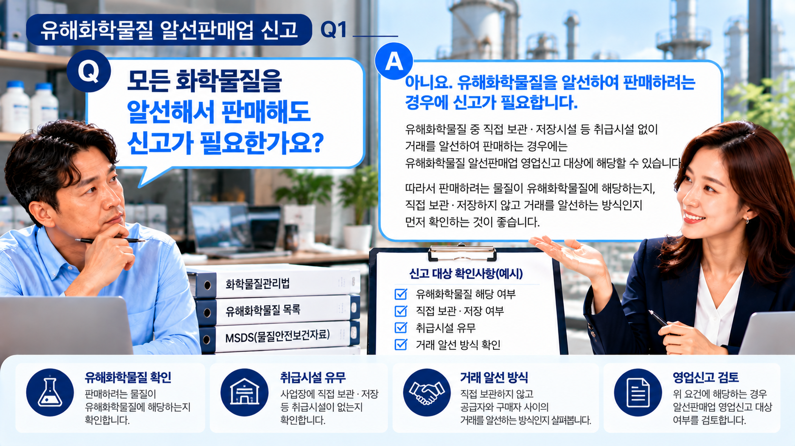
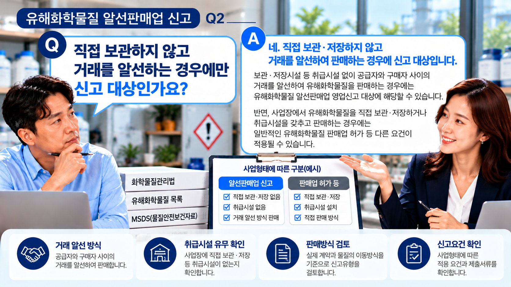
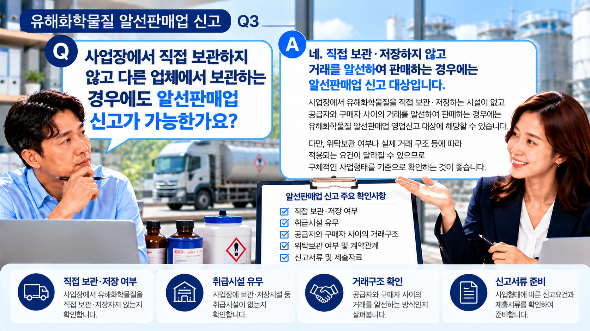

01. 유해화학물질 알선판매업 신고란?
유해화학물질을 직접 보관·저장하는 취급시설 없이 공급자와 구매자 사이의 거래를 알선하여 판매하는 사업형태라면 유해화학물질 알선판매업 영업신고 대상에 해당하는지 확인할 필요가 있습니다.
따라서 사업을 준비할 때는 단순히 ‘화학물질을 판매한다’는 사실만으로 판단하기보다 실제 물질의 보관·취급과 거래구조를 함께 살펴보는 것이 중요합니다.
핵심은 실제 사업형태입니다.
판매하려는 물질이 유해화학물질인지, 사업장에서 직접 보관·저장하는지, 취급시설이 있는지, 거래를 어떤 방식으로 알선하는지를 먼저 확인해 보세요.

02. 먼저 판매하려는 물질을 확인합니다.
신고 검토의 출발점은 판매하려는 물질이 실제 유해화학물질에 해당하는지를 확인하는 것입니다.
제품명만으로 판단하기보다는 물질의 성분과 관련 자료 등을 기준으로 유해화학물질 해당 여부를 확인하는 것이 좋습니다.
판매물질이 정해지지 않았다면 신고유형을 판단하기 전에 취급 예정 물질부터 구체적으로 정리할 필요가 있습니다.
03. 직접 보관·저장하는지를 확인합니다.
알선판매업을 검토할 때 중요한 부분 중 하나가 사업자가 유해화학물질을 직접 보관·저장하는지 여부입니다.
사업장에서 유해화학물질을 직접 보관·저장하거나 취급시설을 갖추어 판매하는 경우에는 알선판매업 신고와 다른 영업형태 및 요건이 적용될 수 있습니다.

04. 알선판매업의 주요 확인사항
| 구분 | 주요 확인사항 |
|---|---|
| 판매물질 | 유해화학물질 해당 여부 |
| 보관·저장 | 사업자의 직접 보관·저장 여부 |
| 취급시설 | 보관·저장시설 등 취급시설 유무 |
| 거래구조 | 공급자와 구매자 사이의 거래 알선 방식 |
| 사업장 | 사업자 및 사업장 기본정보 |
| 신고 | 사업형태에 따른 영업신고 대상 여부 |
05. 다른 업체가 보관하는 경우에는?
사업자가 자신의 사업장에서 유해화학물질을 직접 보관·저장하지 않는 경우에도 그것만으로 알선판매업 신고 여부가 자동으로 결정되는 것은 아닙니다.
다른 업체가 물질을 보관하는 경우에는 실제 계약관계와 물질의 이동방식, 누가 물질을 취급하는지, 공급자와 구매자 사이에서 신청인이 어떤 역할을 하는지를 함께 살펴보는 것이 좋습니다.
보관 장소만 보지 마세요.
‘우리 사무실에 물질이 없다’는 사실뿐 아니라 실제 거래구조와 물질의 이동·취급 관계를 함께 확인해야 적용되는 영업형태를 보다 정확하게 판단할 수 있습니다.

06. 신고절차는 어떻게 진행될까요?
먼저 판매물질과 사업형태를 확인하고 알선판매업 신고 대상에 해당하는지를 검토한 뒤 필요한 자료를 갖추어 영업신고를 진행합니다.
07. 상담 전에 준비하면 좋은 자료
- 판매하려는 화학물질의 명칭과 제품정보
- 성분 및 물질을 확인할 수 있는 관련 자료
- 사업자등록 및 사업장 관련 기본자료
- 유해화학물질의 실제 보관·저장 방식
- 공급자와 구매자 사이의 거래구조
- 물질의 실제 이동 및 배송 방식
처음부터 모든 자료를 완벽하게 준비할 필요는 없습니다. 현재 확인할 수 있는 자료를 기준으로 사업형태와 추가 준비사항을 검토할 수 있습니다.
08. 실무에서 자주 놓치는 부분
- 일반 화학물질 판매와 유해화학물질 판매를 구분하여 확인해야 합니다.
- 사업장에 물질이 없다는 이유만으로 바로 알선판매업이라고 판단하지 않는 것이 좋습니다.
- 직접 보관·저장하거나 취급시설을 갖춘 경우에는 다른 영업형태가 적용될 수 있습니다.
- 공급자·판매자·구매자의 관계와 실제 계약구조를 함께 확인하는 것이 중요합니다.
- 물질이 실제로 어디에서 어디로 이동하는지도 사업형태 판단에 필요한 확인사항입니다.
- 실제 신고 전에는 적용되는 신고요건과 제출자료를 최종적으로 확인하는 것이 좋습니다.
유해화학물질 알선판매업을 준비하고 계신가요?
판매하려는 물질과 보관·취급 방식, 실제 거래구조를 기준으로 신고대상과 준비사항을 먼저 확인해 보세요.